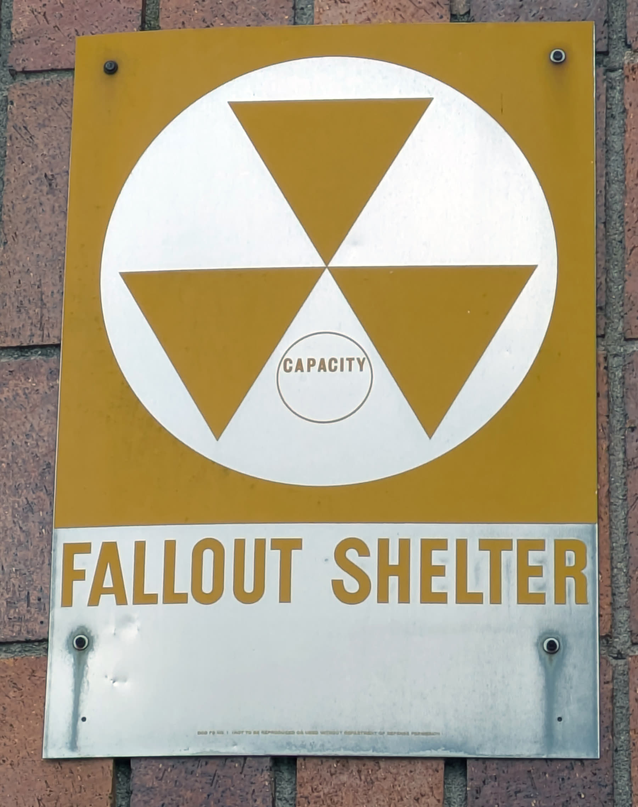
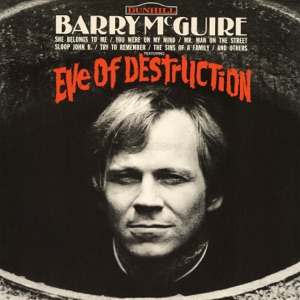
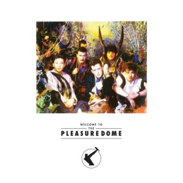

Duck and Cover
In 1951 kregen Amerikaanse schoolkinderen een filmpje te zien over een vrolijke schildpad die Bert heette. Als er gevaar dreigde, trok Bert zijn kop in zijn schild. Zo moesten de kinderen het ook doen als ze een felle lichtflits zagen: onder hun tafeltje kruipen en hun hoofd met hun armen bedekken. De film heette Duck and Cover: duiken en dekken, tegen een atoombom.
Na 1949 hadden zowel Amerika als de Sovjet-Unie de bom, en al snel ook de , die nog veel krachtiger was. Een oorlog tussen de twee zou het einde van de wereld kunnen betekenen. Veertig jaar lang leefden mensen met die gedachte. Popmuzikanten zongen erover, soms met angst, soms met woede en soms met een grap.
 Foto: United States Department of Energy · Public domain
Foto: United States Department of Energy · Public domainEen vrolijk liedje over het einde
De Amerikaan Tom Lehrer was wiskundige aan Harvard en schreef in zijn vrije tijd liedjes met venijnige grappen. In 1959 zong hij We Will All Go Together When We Go, op een vrolijk deuntje. Zijn troost bij een atoomoorlog: we gaan er tenminste allemaal tegelijk aan. Niemand hoeft om een ander te rouwen.

Hoor hoe opgewekt Lehrer erbij speelt, als in een kroeg. De grap werkt juist omdat de muziek zo onschuldig klinkt.
Dertien dagen
In oktober 1962 ontdekten Amerikaanse verkenningsvliegtuigen raketbases van de Sovjet-Unie op Cuba, vlak voor de Amerikaanse kust. Dertien dagen lang stond de wereld op de rand van een kernoorlog. Daarna gaven de Sovjets toe en werden de raketten weggehaald.
 Foto: Amerikaanse overheid (luchtverkenning) · Public domain
Foto: Amerikaanse overheid (luchtverkenning) · Public domainBob Dylan had een maand eerder, in september, voor het eerst A Hard Rain's a-Gonna Fall gezongen, in Carnegie Hall in New York. Toen het lied in 1963 op een plaat verscheen, lazen veel luisteraars het als een lied over de raketcrisis en de radioactieve regen na een atoomoorlog. Dylan zelf zei later dat het gewoon over harde regen ging. Maar het lied was groter geworden dan de schrijver.

Een jongen vertelt in vraag en antwoord wat hij heeft gezien, regel na regel, als een oude ballade. Hoor hoe Dylan elke strofe langer maakt, alsof hij niet kan ophouden met opsommen.

Foto: Myotus · CC0Twee jaar later stond Barry McGuire op nummer één in Amerika met Eve of Destruction, een boze lijst van alles wat er mis was in de wereld. Op de vooravond van de vernietiging, zong hij, en je gelooft het nog steeds niet.

Een rauwe stem, een mondharmonica en een tekst als een krantenkop. Dit is protest dat niet mooi wil klinken.
De jaren tachtig: nog één keer bang
In de jaren zeventig leek de spanning minder te worden. Maar rond 1980 liep die weer op. Amerika en de Sovjet-Unie plaatsten nieuwe raketten in Europa, en in steden als Bonn en Amsterdam gingen honderdduizenden mensen de straat op. De angst voor de bom was terug, en de popmuziek ook.
In juni 1982 zag Carlo Karges, gitarist van de West-Duitse band Nena, hoe er bij een concert van de Rolling Stones in West-Berlijn ballonnen werden losgelaten. Wat zou er gebeuren, vroeg hij zich af, als ze over de Muur naar het Oosten dreven? Hij schreef er een lied over: negenennegentig ballonnen worden op een radarscherm aangezien voor een aanval, en er breekt een oorlog uit zonder winnaar. 99 Luftballons werd in 1983 een nummer één in West-Duitsland en kwam in Amerika zelfs in het Duits op nummer twee.

Een zonnig popliedje met een einde dat je koud laat worden. Aan het slot staat de zangeres in de puinhopen en laat ze één ballon los.
Ook in 1983 verscheen een vrolijker, vreemder lied over de bom. Het Italiaanse duo Righeira zong in het Spaans over een strand waar iedereen heen moet: Vamos a la playa. Het klinkt als een zomerhit, maar de tekst gaat over een atoomexplosie. Het liedje werd een nummer twee in Nederland en België, en een nummer één in Italië en Zwitserland.
Een synthesizerdeuntje om op te dansen, met een tekst die je pas hoort als je goed luistert. Dat contrast is precies de bedoeling.
Een jaar later stond Two Tribes van Frankie Goes to Hollywood negen weken op nummer één in Engeland. Tussen de dansbare beats klinkt de stem van de acteur Patrick Allen, die voor de Britse overheid voorlichtingsfilms had ingesproken over wat je moest doen bij een atoomaanval. In de videoclip vechten dubbelgangers van Ronald Reagan en Sovjet-leider Konstantin Tsjernenko het uit in een worstelring.

Een opzwepende baslijn alsof er een leger aankomt. Let op de zakelijke stem die uitlegt hoe je je moet voorbereiden op het ergste.
Ik hoop dat de Russen ook van hun kinderen houden.Sting, Russians, 1985
Sting keek in die jaren stiekem naar kinderprogramma's van de Sovjet-televisie, via een satellietontvanger van een bevriende student in New York. Hij zag dat Russische kinderen net zo waren als alle andere kinderen. Zijn lied Russians gaat over die gedachte. De melodie leende hij van de Russische componist Sergej .

De droevige melodie komt uit de Romance uit Lieutenant Kijé van Prokofjev. Aan het begin hoor je een stukje van een Sovjet-nieuwsuitzending.
De wind draait
In oktober 1986 spraken de Amerikaanse president Ronald Reagan en de Sovjet-leider Michail Gorbatsjov in Reykjavik op IJsland over het afschaffen van hun kernwapens. Ze werden het niet eens, maar het was het begin van een nieuwe tijd. Gorbatsjov sprak over openheid en hervorming.
 Foto: Fotograaf van het Witte Huis · Public domain
Foto: Fotograaf van het Witte Huis · Public domain Foto: Unknown photographer, Reproduction by Lear 21 at English Wikipedia. · CC BY-SA 3.0
Foto: Unknown photographer, Reproduction by Lear 21 at English Wikipedia. · CC BY-SA 3.0In augustus 1989 speelde de West-Duitse band Scorpions op een groot rockfestival in Moskou. Zanger Klaus Meine was zo onder de indruk van de stemming dat hij een lied schreef over een wind van verandering. Drie maanden later viel de Muur. Wind of Change verscheen in 1990 en werd een nummer één in Duitsland en in zes andere Europese landen. Het fluitje aan het begin werd het geluid van het einde van de Koude Oorlog.

Meine fluit de melodie zelf. Hij zingt over een wandeling langs de rivier de Moskva, naar het Gorki Park. In 2022, na de Russische inval in Oekraïne, veranderde hij de tekst: het was niet de tijd om Rusland te romantiseren.
In december 1991 hield de Sovjet-Unie op te bestaan. De bommen waren er nog, maar de angst die veertig jaar in de popmuziek had geklonken, leek voorbij.